The interface needed stronger consistency, clearer component rules and a shared language for dense B2B workflows without exposing the product to a full redesign.
Case study / B2B HR Design System
Bringing structure to a complex product ecosystem.
I created a design system for a B2B HR product environment where dense workflows, multiple interface patterns and fast delivery needed a clearer, more scalable UI language.
Design Systems
B2B + HR
UI Foundations
Component Rules
Dev Handoff
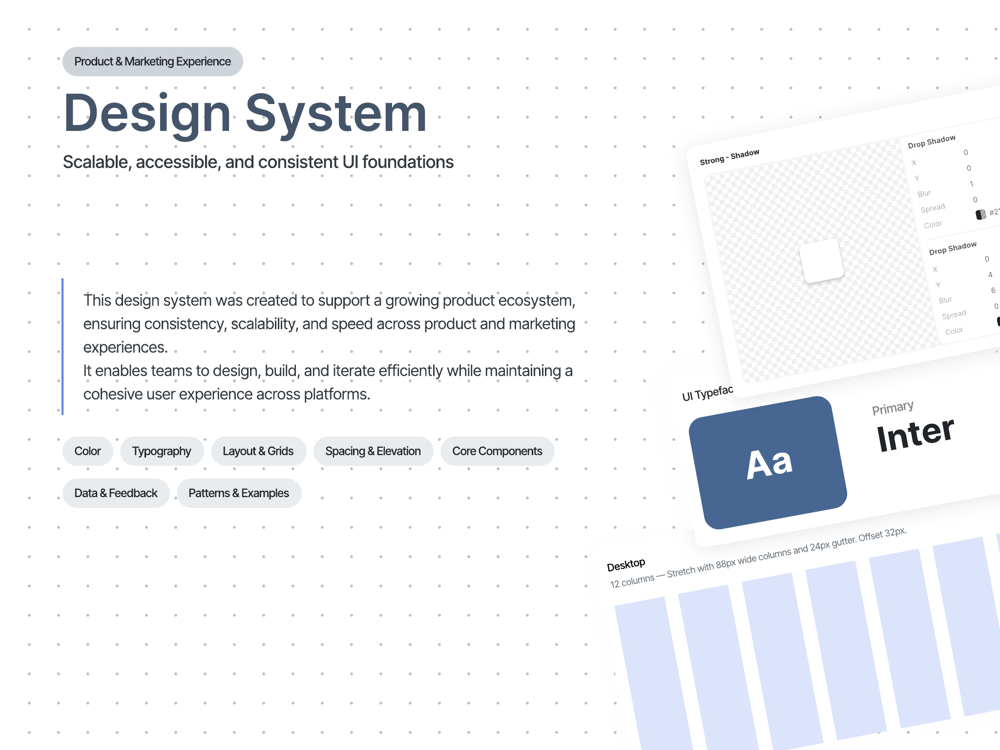
I structured the foundations, defined reusable UI patterns, documented usage rules and worked closely with development to make decisions implementation-friendly.
A practical system covering visual foundations, components, utilities, forms, data patterns and dashboard examples for a more coherent product experience.
Story
A system designed for real product work, not just a polished library.
The goal was not to make a decorative design system. It was to make the product easier to extend: clearer rules for designers, fewer one-off decisions for developers and more predictable interfaces for users working through complex HR and operational tasks.
I focused on the layer where design quality becomes visible in daily product work: hierarchy, spacing, states, component behavior, reusable patterns and documentation that could survive handoff.
01 / Foundations
Rules before components.
I started by defining the visual foundations that every screen depends on: color, typography, layout, spacing and elevation. This gave the interface a more stable hierarchy before moving into individual components.
- Created a clearer visual language for product screens.
- Defined repeatable rules for hierarchy, spacing and surface depth.
- Kept the system aligned with the existing product direction.
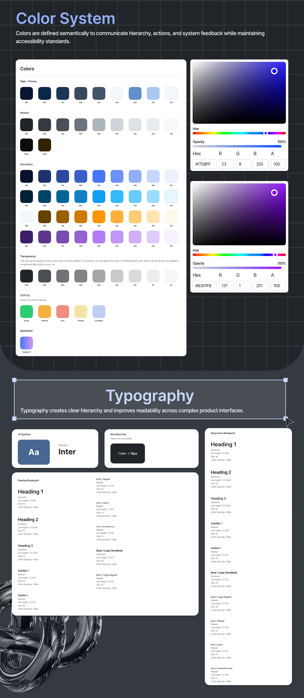
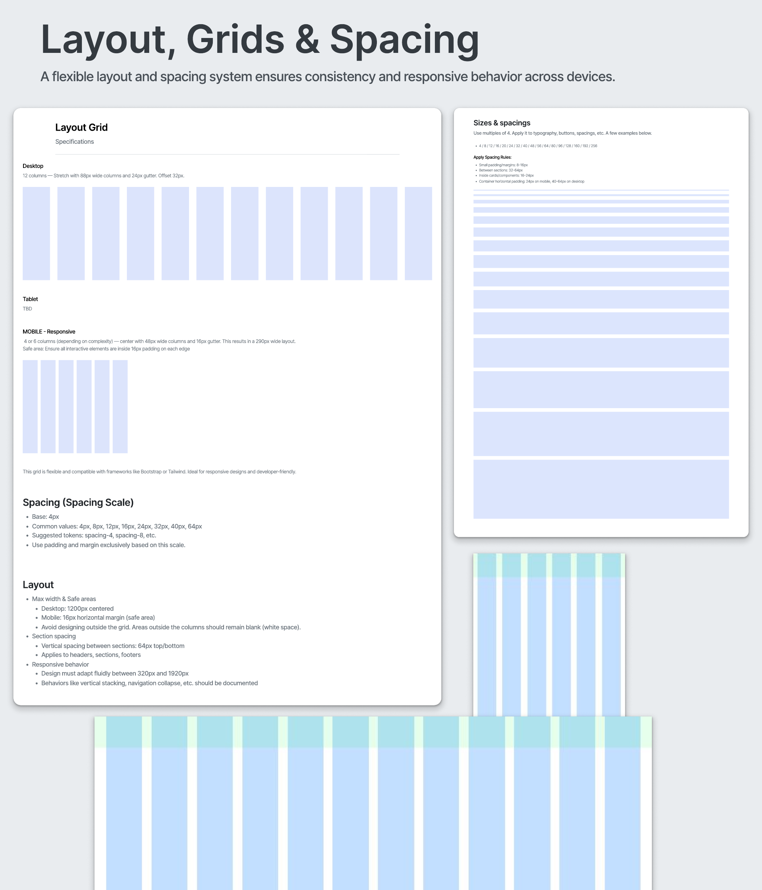
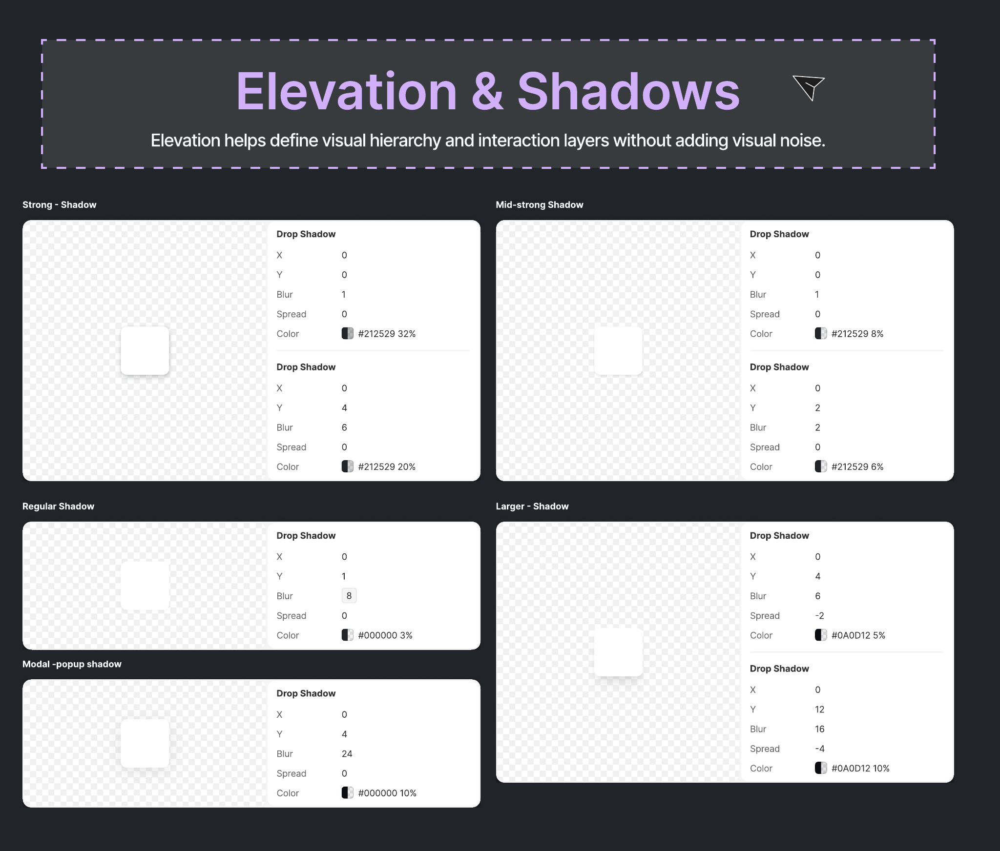
02 / Utility Layer
Small rules that protect usability.
The utility layer covers the details that often create inconsistency: icon sizing, loaders, empty states and progress feedback. These patterns reduce ambiguity in the moments where the product is loading, waiting or guiding the user forward.
- Documented reusable patterns for transitional states.
- Reduced one-off decisions across repeated interface moments.
- Protected clarity in loading, empty and in-progress states.
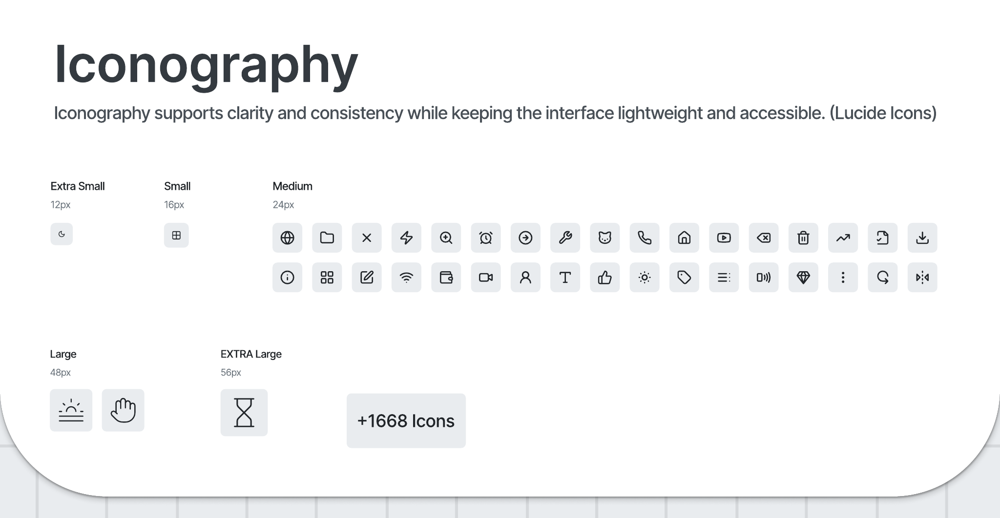
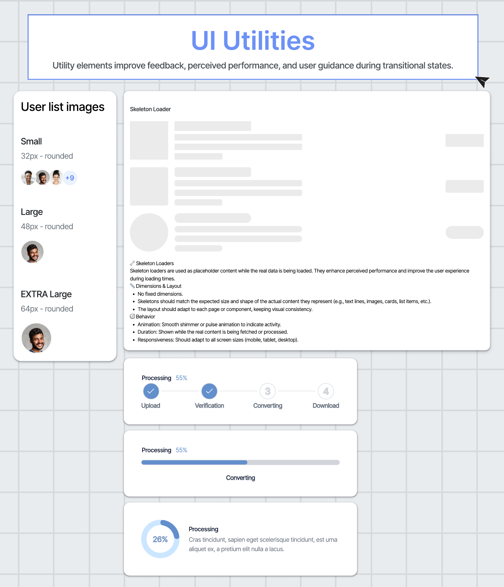
03 / Components
A modular system for reuse, flexibility and scale.
Components were organized around usage, states and behavior, not only appearance. Buttons, badges, inputs, dropdowns, search, tabs, progress, empty states, toasts and messaging patterns were treated as product decisions that needed to be reused consistently.
- Defined component states, sizes and usage logic.
- Designed for dense B2B screens where consistency matters at scale.
- Made the library easier to translate into reusable frontend patterns.
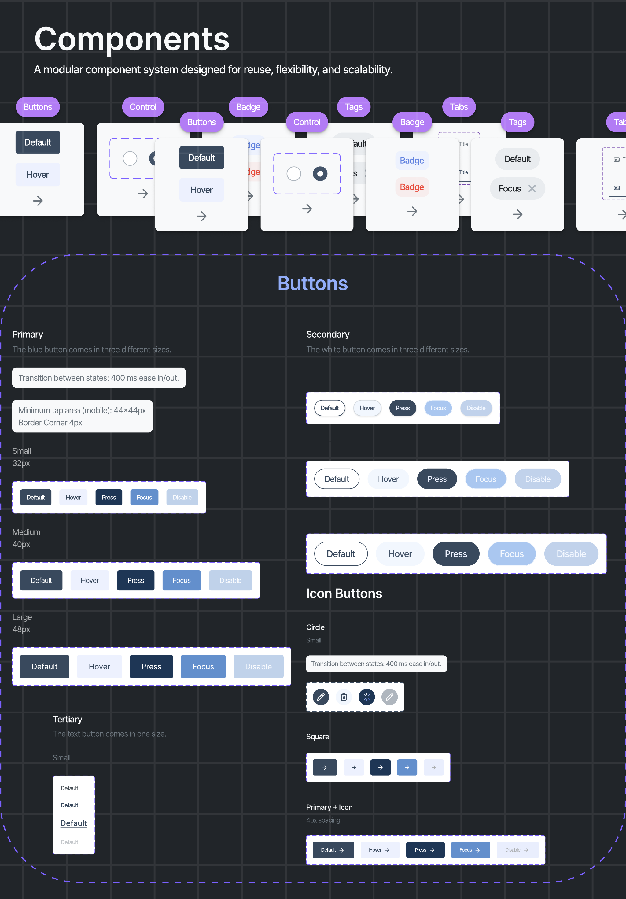
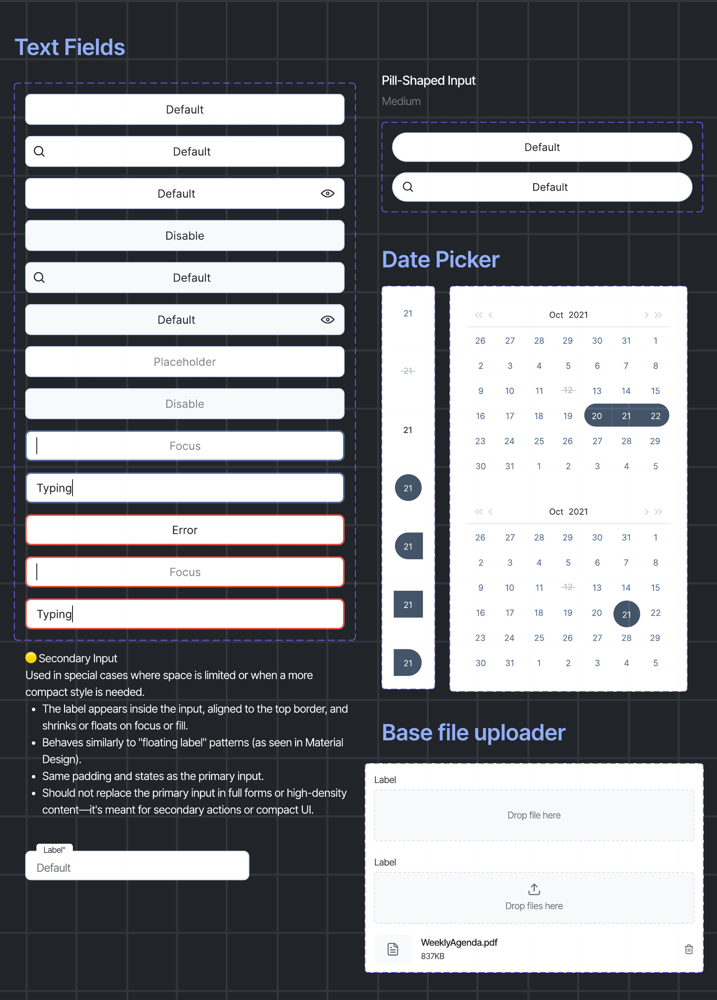
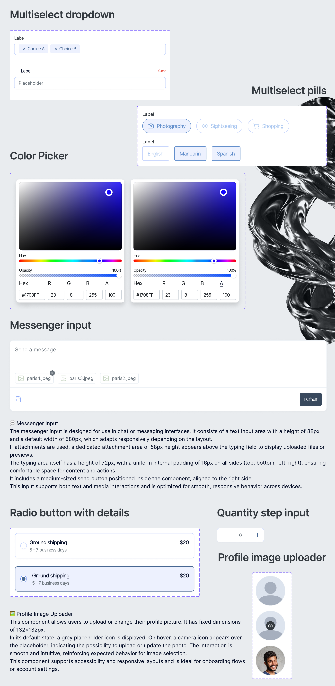
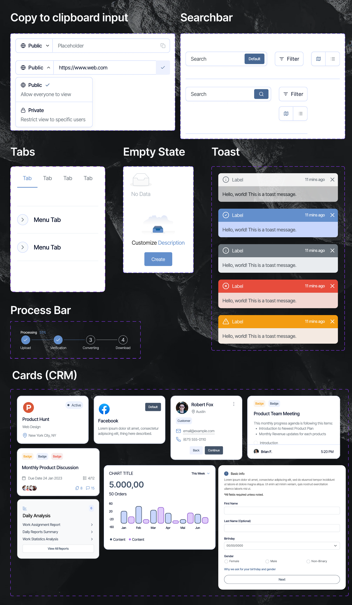
04 / Data & Patterns
Designed for product density.
B2B HR products are rarely made of simple marketing pages. The system needed to support tables, task lists, popups and attachment patterns: the kind of everyday product density where clarity, hierarchy and spacing directly affect usability.
- Supported data-heavy workflows and repeated operational tasks.
- Created patterns for lists, tables, overlays and attachments.
- Balanced information density with readable, human interface rhythm.
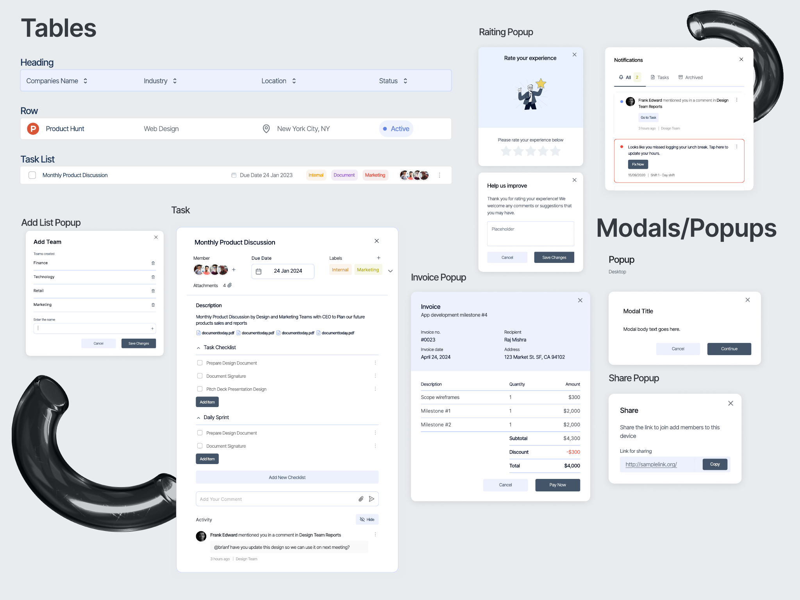
05 / Impact
Faster iteration, better collaboration, more consistent experiences.
The final system gave the team a more reliable base for creating, reviewing and implementing product screens. It helped connect design intent with frontend execution while keeping the interface cohesive as the product continued to evolve.
- Improved design consistency across product patterns.
- Created a clearer source of truth for design and development.
- Made future UI work easier to scale without restarting from scratch.
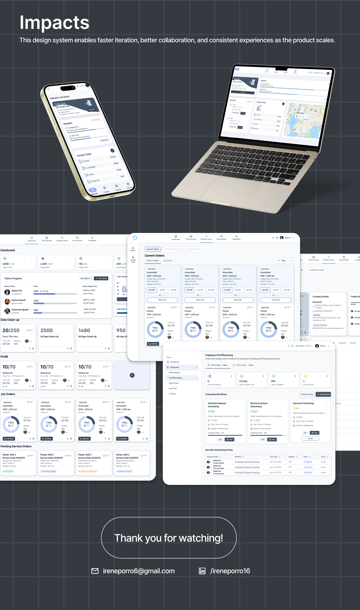